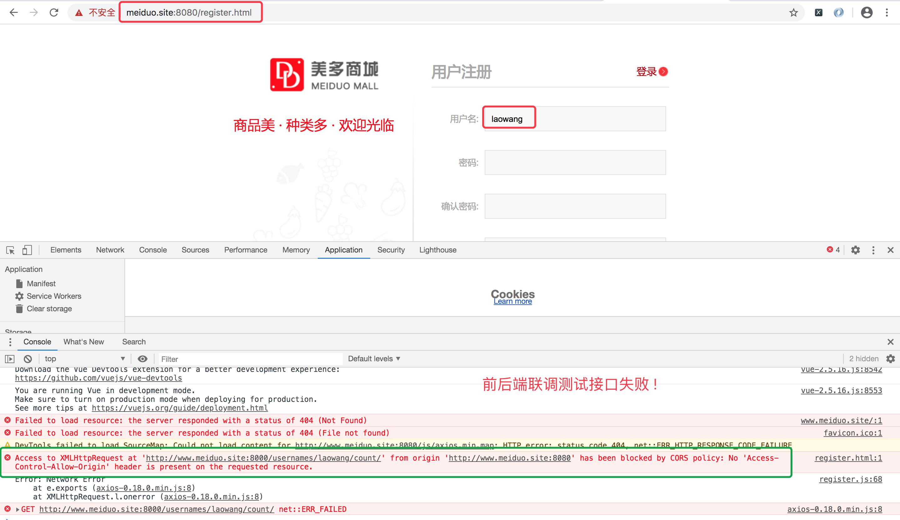

用户名重复注册
1.用户名重复注册逻辑分析

2.用户名重复注册接口设计和定义
1.请求方式
| 选项 | 方案 |
|---|---|
| 请求方法 | GET |
| 请求地址 | /usernames/(?P<username>[a-zA-Z0-9_-]{5,20})/count/ |
2.请求参数：路径参数
| 参数名 | 类型 | 是否必传 | 说明 |
|---|---|---|---|
| username | string | 是 | 用户名 |
3.响应结果：JSON
| 响应结果 | 响应内容 |
|---|---|
| code | 状态码: 0代表成功; 400代表失败 |
| errmsg | 提示信息 |
| count | 记录该用户名的个数 |
3.功能实现
3.0 定义路由转换器
meiduo_mall.utils.converters.py
# 1.converters.py 新建/拖拽以前写好的转换器文件均可
class UsernameConverter:
"""自定义路由转换器去匹配用户名"""
# 定义匹配用户名的正则表达式
regex = '[a-zA-Z0-9_-]{5,20}'
def to_python(self, value):
return str(value)
def to_url(self, value):
return str(value)
class MobileConverter:
"""自定义路由转换器去匹配手机号"""
# 定义匹配手机号的正则表达式
regex = '1[3-9]\d{9}'
def to_python(self, value):
# to_python：将匹配结果传递到视图内部时使用
return str(value)
def to_url(self, value):
# to_url：将匹配结果用于反向解析传值时使用
return str(value)
3.1 总路由添加:
meiduo_mall.urls.py
from django.contrib import admin
from django.urls import path, include
# 1.总路由中注册路由转换器
from django.urls import register_converter
from meiduo_mall.utils import converters
register_converter(converters.UsernameConverter, 'username')
register_converter(converters.MobileConverter, 'mobile')
urlpatterns = [
path('admin/', admin.site.urls),
# 2.添加users的总路由. 注意导入include函数:
path('', include('users.urls')),
]
3.2 子路由添加:
users.urls.py
from django.urls import path
from . import views
urlpatterns = [
# 判断用户名是否重复
path('usernames/<username:username>/count/',views.UsernameCountView.as_view()),
]
3.3 用户名重复注册后端逻辑
在 users.views.py 中添加如下代码
from django import http
from django.views import View
# 注意User的导包路径
from apps.users.models import User
class UsernameCountView(View):
"""判断用户名是否重复注册"""
def get(self, request, username):
'''判断用户名是否重复'''
# 1.查询username在数据库中的个数
try:
count = User.objects.filter(username=username).count()
except Exception as e:
return http.JsonResponse({'code':400, 'errmsg':'访问数据库失败'})
# 2.返回结果(json) ---> code & errmsg & count
return http.JsonResponse({'code': 0, 'errmsg': 'ok', 'count':count})
3.4 使用postman测试结果
3.5 在美多项目中测试结果
在输入框输完用户名之后前端没有任何变化, 右击点检查,查看报错信息

报错的原因是:
1.前端域名端口是8080
2.后端域名端口是8000
跨域问题,浏览器默认基于安全考虑,不允许跨域访问, 那么接下来我们需要解决的是跨域问题.